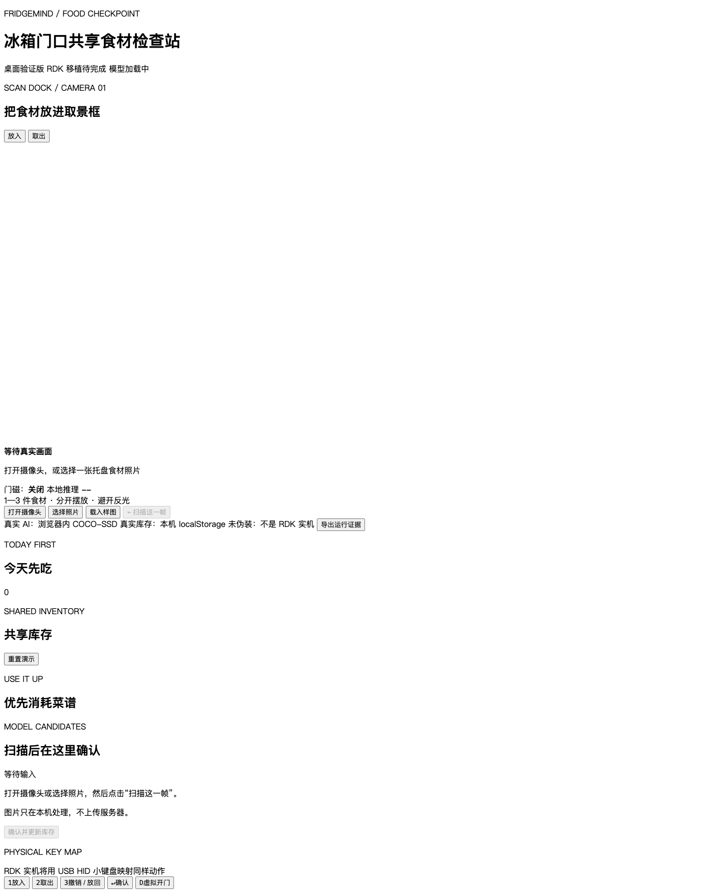

主项目
FridgeMind｜模块化 AI 智能冰箱助手
不换冰箱、可磁吸可拆卸的 AIoT 模块 · 本人职责：产品定义、用户场景、交互方案、原型推进
食材记录容易断、临期食物被遗忘，而智能冰箱整机贵且难普及。FridgeMind 用「门磁事件 + 摄像头差异检测 + 称重信号 + 本地检测模型 + 用户一键确认」感知食材存取，让普通冰箱获得库存管理与临期提醒。
- 库存引擎 6 / 6 单测通过（入库 / 取出 / 撤销 / 零库存钳制）
- 本地 SSDLite MobileNet 检测模型 + 检测站原型页，构建通过
- 目标闭环：放入 → 检测 → 识别 → 更新库存 → 临期 → 推荐 → 取出 → 更新
- 感知闭环与识别精度尚未在 RDK 实机验证